Document ID: 97066
Contents
Introduction
Prerequisites
Requirements
Components Used
Conventions
Vendor Specific DHCP Options
Microsoft DHCP Server
Cisco 1000 Series APs
Lightweight Cisco Aironet 1130, 1240, and 1200 Series APs
Cisco IOS DHCP Server
Cisco Aironet 1130, 1200, 1240 APs
Cisco Aironet 1000 Series APs
Sun Solaris DHCP Server
Linux DHCP Server
Cisco Network Registrar DHCP Server
Lucent QIP DHCP Server
Verify
Troubleshoot
NetPro Discussion Forums - Featured Conversations
Related Information
Introduction
When Cisco's Wirelesss Unified Architecture is deployed, the Lightweight Cisco Aironet Access Points (AP) can use a vendor specific Dynamic Host Control Protocol (DHCP) Option 43 to join specific Wireless LAN Controllers (WLCs) when the WLC is in a different subnet than the LAP. This document describes how to use DHCP Option 43 and provides sample configurations for DHCP Option 43 for lightweight Cisco Aironet (APs) for these DHCP servers:
-
Microsoft Windows 2003 Enterprise DHCP Server
-
Cisco IOS DHCP Server
-
Sun Solaris DHCP Server
-
Linux DHCP Server
-
Cisco Network Registrar DHCP Server
-
Lucent QIP DHCP Server
Refer to Wireless LAN Controller and Lightweight Access Point Basic Configuration Example for information on how to configure an AP to join a WLC.
Prerequisites
Requirements
Cisco recommends that you have knowledge of these topics:
-
Basic knowledge of DHCP
-
Basic Knowledge of the Windows DHCP server configuration
-
Basic Knowledge of the Sun Solaris DHCP server configuration
-
Basic Knowledge of the Linux DHCP server configuration
Components Used
This document is not restricted to specific software and hardware versions.
The information in this document was created from the devices in a specific lab environment. All of the devices used in this document started with a cleared (default) configuration. If your network is live, make sure that you understand the potential impact of any command.
Conventions
Refer to Cisco Technical Tips Conventions for more information on document conventions.
Vendor Specific DHCP Options
RFC 2132 defines two DHCP Options that are relevant to vendor specific options. They are Option 60 and Option 43. DHCP Option 60 is the Vendor Class Identifier (VCI). The VCI is a text string that uniquely identifies a type of vendor device. Table 1 lists the VCIs used by Cisco access points.
|
Access Point |
Vendor Class Identifier (VCI |
|---|---|
|
Cisco Aironet 1000 series |
Airespace.AP1200 |
|
Cisco Aironet 1100 series |
Cisco AP c1100 |
|
Cisco Aironet 1130 series |
Cisco AP c1130 |
|
Cisco Aironet 1200 series |
Cisco AP c1200 |
|
Cisco Aironet 1230 series |
Cisco AP c1200 |
|
Cisco Aironet 1240 series |
Cisco AP c1240 |
|
Cisco Aironet 1250 Series |
Cisco AP c1250 |
|
Cisco Aironet 1300 series |
Cisco AP c1300 |
|
Cisco Aironet 1500 series |
Cisco AP c15001 Cisco AP.OAP15002 Cisco AP.LAP15053 Cisco AP.LAP15104 Cisco AP c1520 Airespace.AP12005 |
|
Cisco 3201 Lightweight Access Point |
Cisco Bridge/AP/WGB c3201 |
|
Cisco 521 Wireless Express Access Point |
Cisco AP c520 |
|
AP801 (embedded in 86x/88x series ISRs |
Cisco AP801 |
1Any 1500 Series AP that runs 4.1 software
21500 OAP AP that runs 4.0 software
31505 Model AP that runs 4.0 software
41510 Model AP that runs 4.0 software
5Any 1500 Series AP that runs 3.2 software
Option 60 is included in the initial DHCP discover message that a DHCP client broadcasts in search of an IP address.
In order to facilitate AP discovery of WLAN controllers that use DHCP Option 43, the DHCP server must be programmed in order to return one or more WLAN controller management interface IP addresses based on the VCI of the AP. In order to do this, program the DHCP server in order to recognize the VCI for each access point type, and then define the vendor specific information.
On the DHCP server, the vendor specific information is mapped to VCI text strings. When the DHCP server sees a recognizable VCI in a DHCP discover from a DHCP client, it returns the mapped vendor specific information in its DHCP offer to the client as DHCP Option 43. On the DHCP server , option 43 and 60 are defined in each DHCP pool (Scope) that offers IP address to the LAPs.
RFC 2132 defines that DHCP servers must return vendor specific information as DHCP Option 43. The RFC allows vendors to define encapsulated vendor-specific sub-option codes between 0 and 255. The sub-options are all included in the DHCP offer as type-length-value (TLV) blocks embedded within Option 43. The definition of the sub-option codes and their related message format is left to the vendors.
When DHCP servers are programmed to offer WLAN Controller IP addresses as Option 43 for Cisco 1000 series APs the sub-option TLV block is defined in this way:
-
Type—0x66 (decimal 102)
-
Length:—A count of the characters of the ASCII string in the Value field. Length must include the commas if there is more than one controller specified, but not a zero-terminator.
-
Value:—A non-zero terminated ASCII string that is a comma-separated list of controllers. No spaces should be embedded in the list.
When DHCP servers are programmed to offer WLAN Controller IP addresses as Option 43 for Cisco Aironet LAPs, for example, Cisco Aironet 1130, 1200, 1230 and/or 1240 series access points, the sub-option TLV block is defined in this way:
-
Type—0xf1 (decimal 241)
-
Length—Number of controller IP addresses * 4
-
Value—List of the WLC management interfaces, typically translated to hexadecimal values
The semantics of DHCP server configuration vary based on the DHCP server vendor. This document contains specific instructions on the Microsoft DHCP server, Cisco IOS DHCP server, Sun Solaris DHCP server, Linux DHCP server, Cisco Network Registrar DHCP server and Lucent QIP DHCP Server. For other DHCP server products, consult the vendor documentation for instructions on vendor specific options.
Microsoft DHCP Server
This section describes the configurations necessary on the Microsoft DHCP server in order to use DHCP Option 43 for WLAN Controller discovery.
Cisco 1000 Series APs
This section describes how a Windows DHCP server is configured in order to return vendor specific information to Cisco 1000 APs. You need to know this key information:
-
Vendor Class Identifier (VCI)
-
Option 43 sub-option code
-
Management IP address(es) of WLAN controller(s)
The VCI for a Cisco 1000 series AP is always Airespace.AP1200. As stated, the Option 43 sub-option code for the Cisco 1000 series access points is type 102 (0x66). The example configurations are done with the Microsoft Management Console (MMC) utility. You can also use the DHCP Server Utility. The steps are virtually identical.
-
Create a new vendor class in order to program the DHCP server to recognize the VCI Airespace.AP1200. In the MMC, right-click the DHCP server icon, and choose Define Vendor Classes.
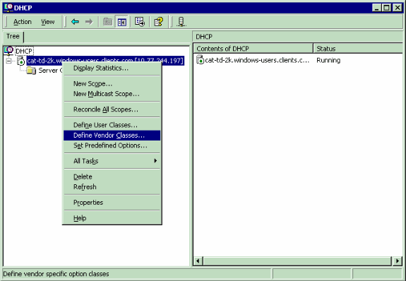
-
Click Add in order to create the new class.
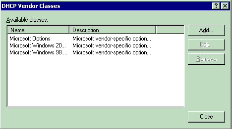
-
Enter a value for the Display Name. In this example, Airespace is used as the Display Name. Also, add a short description of the vendor class in the Description field. Add the Vendor Class Identifier string. In order to do this, click the ASCII field, and type in the appropriate value, in this case Airespace.AP1200. Click OK.
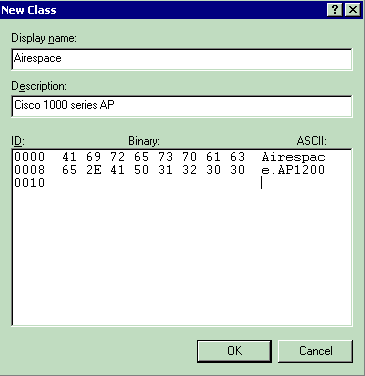
-
The new class is created. Click Close.
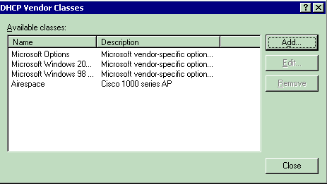
-
Add an entry for the WLAN controller sub-option in the Predefined Options for the newly created Vendor Class. This is where you define the sub-option code type and the data format that is used to deliver the vendor specific information to the APs. In order to create a Predefined Option, right click server icon, and choose Set Predefined Options.
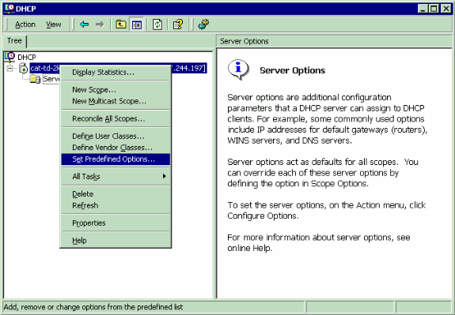
-
A new window opens. Set the Option class to the value you configured for the vendor class. In this example, it is Airespace. Click Add in order to define the option code.
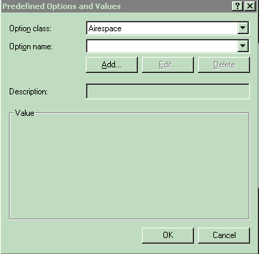
-
The Option Type box appears. In the Name field, enter a descriptive string value, for example, Airespace IP provision. Choose Binary as the Data Type. In the Code field, enter the sub-option value 102. Enter a Description, if desired. Click OK.
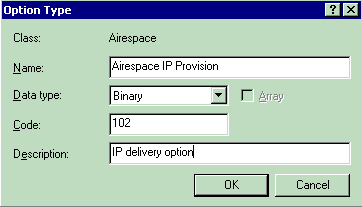
-
The new Predefined Option appears. Click OK. This completes the creation of the Vendor class and sub-option type needed in order to support controller discovery.
-
Right-click the Server Options folder under the DHCP scope, and choose Configure Options.
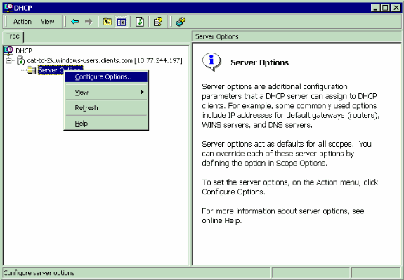
-
The Scope Options box appears. Click the Advanced tab. Choose the Vendor Class that you plan to use, in this case, Airespace.
-
Choose the predefined 102 sub-option to assign to this scope. In the Data Entry area, enter the controller management IP address(es) to return to the APs in the ASCII section. This is a comma delimited list. There is a period (.) in the initial empty Data Entry area. Make sure you remove this period from the list of IP addresses added in the data entry area.
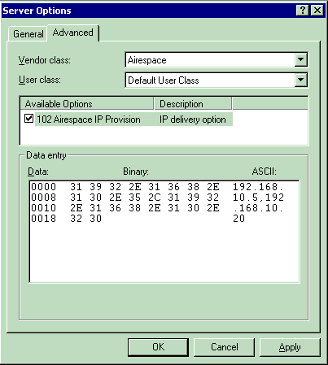
-
This is an example of the results.
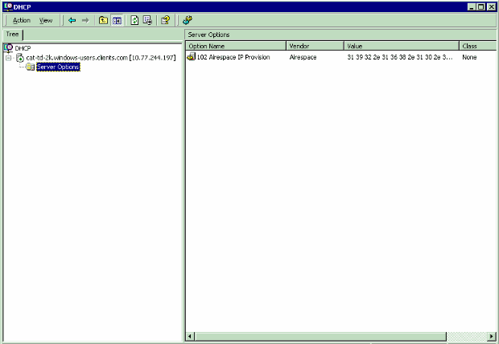
-
Once you complete this step, the DHCP Option 43 is configured. This DHCP option is available for all the DHCP scopes that are configured in the DHCP server. So when the LAPs request for an IP address, the DHCP server sends the option 43 as well as to the LAPs.
Note: Refer to Creating Scopes on Microsoft 2003 server. for more information on how to create a DHCP scope on the WLC.
Lightweight Cisco Aironet 1130, 1240, and 1200 Series APs
This section shows how the Windows DHCP server is configured in order to return vendor specific information to the other lightweight Cisco Aironet series APs. You need to know this key information:
-
Vendor Class Identifier (VCI)
-
Option 43 sub-option code
-
Management IP address(es) of WLAN controller(s)
The VCI for a lightweight Cisco Aironet series access point is specific to each model type. In order to support more than one AP model, a Vendor Class must be created for each model type. The Option 43 sub-option code for the other Cisco Aironet series access points is type 241 (0xf1).
-
In order to configure these options in the Windows DHCP server, open the DHCP Server Administration Tool or MMC. Right-click the DHCP root, and then choose Define Vendor Classes.
-
The DHCP Vendor Classes utility appears. Click Add.
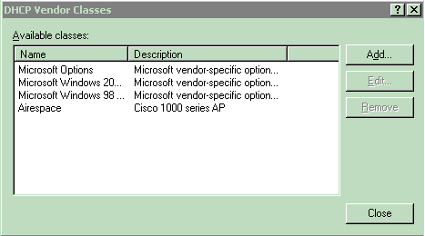
-
A New Class configuration box appears. Enter a value for the Display Name field, for example, Cisco Aironet 1130 AP, and an appropriate description. Click the ASCII Section and enter the appropriate string value for the Vendor Class Identifier. Click OK. Then, click Close on the DHCP Vendor Classes window.
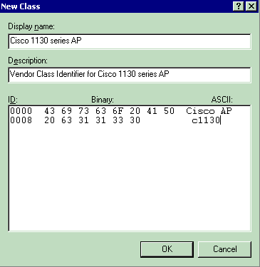
-
Add an entry for the WLAN controller sub-type as a pre-defined option configured for the Vendor Class. Right-click the DHCP Server Root, and then choose Set Predefined Options.
-
Choose the newly created Vendor Option Class in the Option Class field, and then click Add.
-
The Option Type box appears. In the Name field, enter a string value, for example, Option 43. Choose IP Address as the Data Type. Check the Array check box. In the Code field, enter the sub-option code value 241 (0xf1). Enter a Description if desired. Click OK.
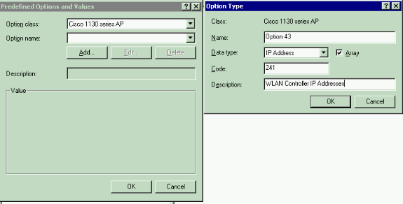
-
The Vendor Class and sub-option are now programmed into the DHCP server. Now, the vendor specific information must be defined for the AP DHCP scope. Choose the appropriate DHCP scope. Right-click Scope Options, and choose Configure Options.
-
Click the Advanced tab. Choose the Vendor Class you previously defined. Check the 241 Option 43 check box, and then enter each WLC management interface IP address. Click Apply.
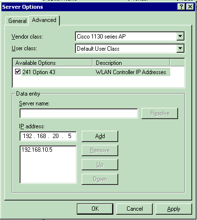
-
Once you complete this step, the DHCP Option 43 is configured. This DHCP option isIP address, the DHCP server sends the option 43 as well as to the LAPs. Here is an example, which shows the DHCP option 43 that is made available for a newly created DHCP scope, Cisco.
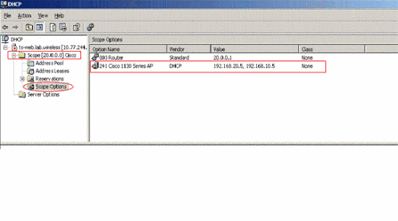
Note: A Vendor Class and sub-options must be defined for each type of lightweight Cisco Aironet AP.
Cisco IOS DHCP Server
Cisco Aironet 1130, 1200, 1240 APs
The Cisco IOS DHCP server only allows Option 43 definitions for one device type for each DHCP address pool, so only one AP type can be supported for each DHCP address pool. Complete these steps in order to configure DHCP Option 43 for lightweight Cisco Aironet access points in the embedded Cisco IOS DHCP server:
-
Enter configuration mode at the Cisco IOS command line interface (CLI).
-
Create the DHCP pool, which includes the necessary parameters, such as the default router and server name. This is an example DHCP scope:
ip dhcp pool <pool name> network <ip network> <netmask> default-router <default-router IP address> dns-server <dns server IP address>
-
Add the Option 60 line with this syntax:
option 60 ascii "VCI string of the AP"
Note: Avoid raw DHCP Option 43 without the specification of a VCI if possible. Raw DHCP Option 43 limits the DHCP server to support a single device type for vendor specific information for each DHCP scope. Also, every DHCP client receives the Option 43 values in a DHCP Offer, regardless of whether the values are relevant to the device.
-
For the VCI string, use the value from Table 1. The quotation marks must be included.
-
Add the Option 43 line with this syntax:
option 43 hex <hexadecimal string>
The hexadecimal string in Step 4 is assembled as a sequence of the TLV values for the Option 43 sub-option: Type + Length + Value. Type is always the sub-option code 0xf1. Length is the number of controller management IP addresses times 4 in hex. Value is the IP address of the controller listed sequentially in hex.
For example, suppose there are two controllers with management interface IP addresses, 192.168.10.5 and 192.168.10.20. The type is 0xf1. The length is 2 * 4 = 8 = 0x08. The IP addresses translate to c0a80a05 (192.168.10.5) and c0a80a14 (192.168.10.20). When the string is assembled, it yields f108c0a80a05c0a80a14. The Cisco IOS command that is added to the DHCP scope is:
option 43 hex f108c0a80a05c0a80a14
Cisco Aironet 1000 Series APs
The Cisco IOS DHCP server only allows Option 43 definitions for one device type for each DHCP address pool, so only one AP type can be supported for each DHCP address pool.
Complete these steps in order to configure DHCP Option 43 for lightweight Cisco Aironet access points in the embedded Cisco IOS DHCP server:
-
Enter configuration mode at the Cisco IOS CLI.
-
Create the DHCP pool, which includes the necessary parameters, such as default router and server name. This is an example DHCP scope:
ip dhcp pool <pool name> network <ip network> <netmask> default-router <default-router IP address> dns-server <dns server IP address>
-
Add the Option 60 line with this syntax:
option 60 ascii "Airespace.AP1200"
The quotation marks must be included.
-
Add the Option 43 line with this syntax:
option 43 ascii "Comma separated IP address list"
Note: The quotation marks must be included. No sub-option value needs to be defined in the Cisco IOS DHCP server for Cisco 1000 series access points.
For example, if you configure Option 43 for Cisco 1000 series APs with the controller IP Management IP addresses 192.168.10.5 and 192.168.10.20 add this line to the DHCP pool in the Cisco IOS CLI:
option 43 ascii "192.168.10.5,192.168.10.20"
Note: You must use the management interface of the WLAN controller. The Cisco IOS DHCP server is limited to one Option 43 for each DHCP pool, so you can only configure a DHCP scope for a single access point type.
Sun Solaris DHCP Server
This section contains information on how the Sun Solaris DHCP server is configured in order to return vendor specific information to lightweight Cisco Aironet series APs.
allow bootp;
option space Cisco_LWAPP_AP;
option Cisco_LWAPP_AP.server-address code 43 = string;
subnet 192.168.10.0 netmask 255.255.255.0 {
authoritative;
option routers 192.168.10.1;
option subnet-mask 255.255.255.0;
option domain-name "cisco.com";
option domain-name-servers 192.168.10.2, 192.168.10.3;
range dynamic-bootp 192.168.10.11 192.168.10.254;
default-lease-time 86400;
!--- This section provides for legacy
!--- APs--substitute the IP addresses in text
class "Airespace 1200" {
match if option vendor-class-identifier = "Airespace 1200";
option vendor-class-identifier "Airespace 1200";
vendor-option-space Cisco_LWAPP_AP;
option Cisco_LWAPP_AP.server-address "192.168.10.5"; }
class "Airespace.AP1200" {
match if option vendor-class-identifier = "Airespace.AP1200";
option vendor-class-identifier "Airespace 1200";
vendor-option-space Cisco_LWAPP_AP;
option Cisco_LWAPP_AP.server-address "192.168.10.5"; }
!--- This section provides for APs converted to LWAPP and Cisco LAP models.
!--- Cisco Aironet APs use the type-length-value (TLV) format for DHCP
!--- Option 43. DHCP servers must be programmed to return the option based
!--- on the APs DHCP Vendor Class Identifier (VCI) string (DHCP Option 60).
!--- The format of the TLV block is:
!--- Type: 0xf1 (decimal 241)
!--- Length: Number of controller IP addresses * 4 = 1*4 = 4 (or 0x04)
!--- Value: List of WLC Management interface IP addresses converted to hex
!--- These samples show 1 controller IP Managementaddress,
!--- 192.168.10.5 (or c0:a8:0a:05)
class "Cisco AP c1200" {
match if option vendor-class-identifier = "Cisco AP c1200";
option vendor-class-identifier "Cisco AP c1200";
vendor-option-space Cisco_LWAPP_AP;
option Cisco_LWAPP_AP.server-address f1:04:c0:a8:0a:05; }
class "Cisco AP c1130" {
match if option vendor-class-identifier = "Cisco AP c1130";
option vendor-class-identifier "Cisco AP c1130";
vendor-option-space Cisco_LWAPP_AP;
option Cisco_LWAPP_AP.server-address f1:04:c0:a8:0a:05; }
class "Cisco AP c1240" {
match if option vendor-class-identifier = "Cisco AP c1240";
option vendor-class-identifier "Cisco AP c1240";
vendor-option-space Cisco_LWAPP_AP;
option Cisco_LWAPP_AP.server-address f1:04:c0:a8:0a:05; }
}
Linux DHCP Server
This section contains information on how the Linux DHCP server is configured in order to return vendor specific information to lightweight Cisco Aironet series APs.
ddns-update-style interim;
allow bootp;
# option opt-43 code 43 = text;
option space Cisco_LWAPP_AP;
option Cisco_LWAPP_AP.server-address code 43 = string;
subnet 192.168.247.0 netmask 255.255.255.0 {
authoritative;
option routers 192.168.247.1;
option subnet-mask 255.255.255.0;
option domain-name "cisco.com";
option domain-name-servers 192.168.247.2, 192.168.247.3;
# option opt-43 = "192.168.247.5";
range dynamic-bootp 192.168.247.11 192.168.247.254;
default-lease-time 300;
class "Cisco AP c1200" {
match if option vendor-class-identifier = "Cisco AP c1200";
option vendor-class-identifier "Cisco AP c1200";
vendor-option-space Cisco_LWAPP_AP;
option Cisco_LWAPP_AP.server-address f1:04:c0:a8:f7:05; }
class "Cisco AP c1130" {
match if option vendor-class-identifier = "Cisco AP c1130";
option vendor-class-identifier "Cisco AP c1130";
vendor-option-space Cisco_LWAPP_AP;
option Cisco_LWAPP_AP.server-address f1:04:c0:a8:f7:05; }
class "Cisco AP c1240" {
match if option vendor-class-identifier = "Cisco AP c1240";
option vendor-class-identifier "Cisco AP c1240";
vendor-option-space Cisco_LWAPP_AP;
option Cisco_LWAPP_AP.server-address f1:04:c0:a8:f7:05; }
class "Airespace 1200" {
match if option vendor-class-identifier = "Airespace 1200";
option vendor-class-identifier "Airespace 1200";
vendor-option-space Cisco_LWAPP_AP;
option Cisco_LWAPP_AP.server-address "192.168.247.5"; }
class "Airespace.AP1200" {
match if option vendor-class-identifier = "Airespace.AP1200";
option vendor-class-identifier "Airespace 1200";
vendor-option-space Cisco_LWAPP_AP;
option Cisco_LWAPP_AP.server-address "192.168.247.5"; }
}
Cisco Network Registrar DHCP Server
The Cisco Network Registrar DHCP server supports Vendor Specific attributes. However, the configuration of these attributes is not possible with the graphical interface. The CLI must be used.
Complete these configuration steps in order to support L3-LWAPP Discovery with DHCP Option 43:
Note: The CLI Command tool can be found in the Network registrar directory: C:\Program Files\Network Registrar\BIN\ nrcmd.bat
-
Log into the DHCP server. Complete these steps:
username: admin password: 100 Ok session: cluster = localhost default-format = user user-name = admin visibility = 5 nrcmd> -
Create the Vendor Class Identifier for Cisco AP1000 Series APs:
nrcmd> vendor-option airespace create Airespace.AP1200 100 Ok airespace: name = airespace read-only = disabled vendor-class-id = Airespace.AP1200Create the Vendor Class Identifier for Cisco AP1200 Series APs:
nrcmd> vendor-option aironet1200 create "Cisco AP c1200" 100 Ok aironet1200: name = aironet read-only = disabled vendor-class-id = “Cisco AP c1200”Note: For other models of LAP, replace the vendor-class-id parameter with the specific VCI string from Table 1.
-
Associate the values that can be sent in the DHCP Offer by the server when it receives a request with Option 60 set to Airespace.AP1200. The DHCP Option 43 can support multiple values in the same Option 43 field. These options need to be identified individually by a subtype.
In this case, only one value is required, without any subtype. However, the CNR configuration requires that you create a subtype option:
For Cisco AP1000 Series APs:
nrcmd>vendor-option airespace definesuboption controller_ip 1 BYTE_ARRAY no-suboption-opcode,no-suboption-len 100 Ok controller_ip(1) : byte_array(no-suboption-opcode,no-suboption-len)For Cisco AP1200 Series APs:
nrcmd>vendor-option aironet1200 definesuboption controller_ip 241 IPADDR_ARRAY 100 Ok Controller_ip(241) : ipaddr_array 100 Ok vendor-option aironet1200 enable read-only 100 Ok read-only=enabled nrcmd>policy system_default_policy setVendorOption aironet1200 controller_ip 1.2.3.4,2.3.4.5 100 Ok aironet1200 controller_ip[0](241) IPADDR_ARRAY(1) = 1.2.3.4,2.3.4.5 -
However, in order to hide the subtype feature and send only a row string (BYTE_ARRAY) with the IP values, CNR supports specific flags in order to remove the subtype ids and length. These are no-suboption-opcode and no-suboption-len flags.
For Cisco AP1000 Series APs:
nrcmd>vendor-option list 100 Ok airespace: name = airespace read-only = disabled vendor-class-id = Airespace.AP1200 nrcmd> vendor-option airespace listsuboptions 100 Ok controller_ip(241) : byte_array(no-suboption-opcode,no-suboption-len)For Cisco AP1200 Series APs:
nrcmd>vendor-option list 100 Ok airespace: name = aironet1200 read-only = enabled vendor-class-id = aironet1200 nrcmd>vendor-option aironet1200 listsuboptions 100 Ok controller_ip(241) : ipaddr_array(no-suboption-opcode,no-suboption-len) -
Associate values based on the DHCP pools:
For Cisco AP1000 Series APs:
nrcmd>policy VLAN-52 setvendoroption airespace controller_ip 31:30:2E:31:35:30:2E:31:2E:31:35:2C:31:30:2E:31:35:30:2E:35:30:2E:31:35:2C 100 Ok airespace controller_ip[0](1) BYTE_ARRAY(1) = 31:30:2e:31:35:30:2e:31:2e:31:35:2c:31:30:2e:31:35:30:2e:35:30:2e:31:35:2c
For Cisco AP1200 Series APs:
nrcmd>policy system_default_policy setVendorOption aironet1200 controller_ip 1.2.3.4,2.3.4.5 100 Ok aironet1200 controller_ip[0](241) IPADDR_ARRAY(1) = 1.2.3.4,2.3.4.5
In this example, the DHCP Pool named VLAN-52, which is already defined in CNR by the graphical interface, is configured with Option 43 10.150.1.15,10.150.50.15 when it receives a request from an Airespace.AP1200 device.
Note: 31:30:2e:31:35:30:2e:31:2e:31:35:2c:31:30:2e:31:35:30:2e:35:30:2e:31:35:2c is the hexadecimal representation of the string 10.150.1.15,10.150.50.15.
-
Finally, save the DHCP configuration and reload.
nrcmd>save 100 Ok
nrcmd>dhcp reload 100 Ok nrcmd>exit
Refer to Managing Advanced DHCP Server Properties for more information on Vendor-Options configurations on a Cisco CNR DHCP server.
Lucent QIP DHCP Server
This section provides a few tips for how to configure the Lucent QIP DHCP server in order to return vendor specific information to lightweight Cisco Aironet series APs.
Note: For complete information and the steps involved, refer to the documentation provided by the vendor.
The DHCP Option 43 can contain any vendor specific information. The DHCP server passes this information in the form of a hex string to the clients that receive the DHCP offer.
On the Lucent QIP DHCP server, the vendor specific information can be provided on the DHCP Option Template- Modify page. You see the Active Options in this screen on the right side. Choose Vendor Specific Options and enter the information in the Value field, as shown.
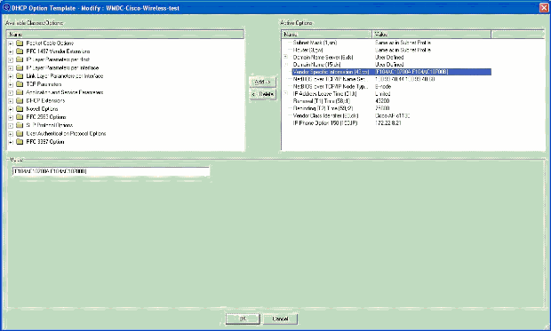
In order to include the Controller IP addresses in the DHCP option 43 message, enter the information to the DHCP Option template in QIP as a single hex value: [ip hex]
In order to send more than one IP address with DHCP Option 43, enter the information to the DHCP Option template in QIP as a single hex value:[ip hex ip hex] and not [ip hex],[ip hex]. In this case, the comma in the middle causes problems for DHCP to parse the string passed from QIP.
For example, suppose there are two controllers with management interface IP addresses, 192.168.10.5 and 192.168.10.20. The type is 0xf1. The length is 2 * 4 = 8 = 0x08. The IP addresses translate to c0a80a05 (192.168.10.5) and c0a80a14 (192.168.10.20). When the string is assembled, it yields f108c0a80a05c0a80a14. On the Lucent QIP DHCP server, the hex string that needs to be added to the DHCP scope is:
[f108c0a80a05c0a80a14]
The hex string must be given within square brackets. The square brackets are mandatory. Once the DHCP option 43 is modified to reflect this value, the LAPs are able to find and register with the controller.
Verify
Use this section in order to verify your configuration.
If you use 1130 /1200/1230/1240 series LAPs, which have a console port, you can check that the WLC IP addresses are provided to the LAPs during DHCP IP address assignment. This is a sample output from a Cisco 1230 series LAP:
*Mar 1 00:00:17.497: %LINEPROTO-5-UPDOWN: Line protocol on Interface Dot11Radio1, changed state to down *Mar 1 00:00:17.898: %LINEPROTO-5-UPDOWN: Line protocol on Interface Dot11Radio0, changed state to down *Mar 1 00:00:25.352: %DOT11-6-FREQ_USED: Interface Dot11Radio0, frequency 2447 selected *Mar 1 00:00:25.353: %LINK-3-UPDOWN: Interface Dot11Radio0, changed state to up *Mar 1 00:00:26.352: %LINEPROTO-5-UPDOWN: Line protocol on Interface Dot11Radio0, changed state to up *Mar 1 00:00:29.440: %LWAPP-5-CHANGED: LWAPP changed state to DISCOVERY *Mar 1 00:00:29.475: %LINK-5-CHANGED: Interface Dot11Radio0, changed state to reset *Mar 1 00:00:29.704: %LINK-3-UPDOWN: Interface Dot11Radio1, changed state to up *Mar 1 00:00:30.121: Logging LWAPP message to 255.255.255.255. %SYS-6-LOGGINGHOST_STARTSTOP: Logging to host 255.255.255.255 started - CLI initiated %LINK-3-UPDOWN: Interface Dot11Radio0, changed state to up %LINK-5-CHANGED: Interface Dot11Radio1, changed state to reset %LINK-3-UPDOWN: Interface Dot11Radio1, changed state to up %LINK-5-CHANGED: Interface Dot11Radio0, changed state to reset %LINK-3-UPDOWN: Interface Dot11Radio0, changed state to up %LINEPROTO-5-UPDOWN: Line protocol on Interface Dot11Radio1, changed state to up Translating "CISCO-LWAPP-CONTROLLER"...domain server (255.255.255.255) %DHCP-6-ADDRESS_ASSIGN: Interface FastEthernet0 assigned DHCP address 20.0.0.6, mask 255.0.0.0, hostname AP001b.d4e3.a81b %LWAPP-3-CLIENTEVENTLOG: Controller address 192.168.10.5 obtained through DHCP %LWAPP-3-CLIENTEVENTLOG: Controller address 192.168.10.5 obtained through DHCP
If you use a Cisco IOS DHCP server, issue the show ip dhcp binding command in order to view the list of the DHCP addresses assigned to DHCP clients. Here is an example:
2800-ISR-TSWEB#show ip dhcp binding
Bindings from all pools not associated with VRF:
IP address Client-ID/ Lease expiration Type
Hardware address/
User name
192.168.25.1 000b.855b.fbd0 Jun 29 2007 11:49 AM Automatic
On the WLC CLI, you can issue the show ap summary command in order to verify that the APs registered with the WLC. Here is an example:
((Cisco Controller) >show ap summary
AP Name Slots AP Model Ethernet MAC Location Port
------------- ----- --------- ----------------- ---------------- ----
ap:5b:fb:d0 2 AP1010 00:0b:85:5b:fb:d0 default_location 1
If you have Wireless LANs configured, you can issue the show client summary command in order to see the clients that are registered with the WLC:
(Cisco Controller) >show client summary
Number of Clients................................ 1
MAC Address AP Name Status WLAN Auth Protocol Port
----------------- ------------- ------------- ---- ---- -------- ----
00:40:96:a1:45:42 ap:64:a3:a0 Associated 4 Yes 802.11a 1
Troubleshoot
Use this section in order to troubleshoot your configuration.
Issue the debug dhcp message enable command on the WLC in order to view the sequence of events that occur between the DHCP server and client. Here is an example:
(Cisco Controller) >Thu Jun 28 17:07:53 2007: 00:0b:85:5b:fb:d0 dhcp option len,
including the magic cookie = 38
Thu Jun 28 17:07:53 2007: 00:0b:85:5b:fb:d0 dhcp option: received DHCP DISCOVER msg
Thu Jun 28 17:07:53 2007: 00:0b:85:5b:fb:d0 dhcp option: skipping option 57, len 2
Thu Jun 28 17:07:53 2007: 00:0b:85:5b:fb:d0 dhcp option: skipping option 55, len 6
Thu Jun 28 17:07:53 2007: 00:0b:85:5b:fb:d0 dhcp option:
vendor class id = Airespace.AP1200 (len 16)
Thu Jun 28 17:07:53 2007: 00:0b:85:5b:fb:d0 dhcpParseOptions: options end,
len 38, actual 64
Thu Jun 28 17:07:53 2007: dhcpd: sending 300 bytes raw
0.0.0.0:68 -> 10.77.244.212:1067
Thu Jun 28 17:07:53 2007: dhcpd: Received 300 byte dhcp packet
from 0xd4f44d0a 10.77.244.212:68
Thu Jun 28 17:07:58 2007: 00:0b:85:5b:fb:d0 dhcp option len, including
the magic cookie = 50
Thu Jun 28 17:07:58 2007: 00:0b:85:5b:fb:d0 dhcp option: received DHCP REQUEST msg
Thu Jun 28 17:07:58 2007: 00:0b:85:5b:fb:d0 dhcp option: requested ip = 192.168.25.1
Thu Jun 28 17:07:58 2007: 00:0b:85:5b:fb:d0 dhcp option: server id = 192.168.25.10
Thu Jun 28 17:07:58 2007: 00:0b:85:5b:fb:d0 dhcp option: skipping option 57, len 2
Thu Jun 28 17:07:58 2007: 00:0b:85:5b:fb:d0 dhcp option: skipping option 55, len 6
This is debug lwapp packet enable command output from the WLC that indicates that DHCP option 43 is used as the discovery method in order to discover WLC IP addresses:
Thu Jun 28 17:51:47 2007: Received LWAPP DISCOVERY REQUEST from AP 00:0b:85:5b:fb:d0
to 00:0b:85:33:84:a0 on port '1'
Thu Jun 28 17:51:47 2007: Successful transmission of LWAPP Discovery-Response
to AP 00:0b:85:5b:fb:d0 on Port 1
Thu Jun 28 19:22:39 2007: Start of Packet
Thu Jun 28 19:22:39 2007: Ethernet Source MAC (LRAD): 00:D0:58:AD:AE:CB
Thu Jun 28 19:22:39 2007: Msg Type :
Thu Jun 28 19:22:39 2007: DISCOVERY_REQUEST
Thu Jun 28 19:22:39 2007: Msg Length : 31
Thu Jun 28 19:22:39 2007: Msg SeqNum : 0
Thu Jun 28 19:22:39 2007:
IE : UNKNOWN IE 58
Thu Jun 28 19:22:39 2007: IE Length : 1
Thu Jun 28 19:22:39 2007: Decode routine not available, Printing Hex Dump
Thu Jun 28 19:22:39 2007: 00000000: 03 .
Thu Jun 28 19:22:39 2007:
The value of the IE 58 parameter indicates the discovery type. For DCHP Option 43 it is 3.
If you use the Cisco IOS DHCP server on the router, you can issue the debug dhcp detail command and the debug ip dhcp server events command in order to view the DHCP client and server activity. Here is an example from the debug ip dhcp server events command:
*Jun 28 11:49:33.107: DHCPD: Sending notification of DISCOVER: *Jun 28 11:49:33.107: DHCPD: htype 1 chaddr 000b.855b.fbd0 *Jun 28 11:49:33.107: DHCPD: remote id 020a0000c0a8190a01000000 *Jun 28 11:49:33.107: DHCPD: circuit id 00000000 *Jun 28 11:49:33.107: DHCPD: Seeing if there is an internally specified pool class: *Jun 28 11:49:33.107: DHCPD: htype 1 chaddr 000b.855b.fbd0 *Jun 28 11:49:33.107: DHCPD: remote id 020a0000c0a8190a01000000 *Jun 28 11:49:33.107: DHCPD: circuit id 00000000 *Jun 28 11:49:38.603: DHCPD: Sending notification of ASSIGNMENT: *Jun 28 11:49:38.603: DHCPD: address 192.168.25.1 mask 255.255.255.0 *Jun 28 11:49:38.603: DHCPD: htype 1 chaddr 000b.855b.fbd0 *Jun 28 11:49:38.603: DHCPD: lease time remaining (secs) = 86400 *Jun 28 11:49:38.607: DHCPD: Sending notification of ASSIGNMENT: *Jun 28 11:49:38.607: DHCPD: address 192.168.25.1 mask 255.255.255.0 *Jun 28 11:49:38.607: DHCPD: htype 1 chaddr 000b.855b.fbd0 *Jun 28 11:49:38.607: DHCPD: lease time remaining (secs) = 86400
Issue the show ip dhcp binding command in order to view the list of the DHCP addresses assigned to DHCP clients.
2800-ISR-TSWEB#show ip dhcp binding
Bindings from all pools not associated with VRF:
IP address Client-ID/ Lease expiration Type
Hardware address/
User name
192.168.25.1 000b.855b.fbd0 Jun 29 2007 11:49 AM Automatic
NetPro Discussion Forums - Featured Conversations
| NetPro Discussion Forums - Featured Conversations for Wireless |
| Wireless - Mobility: WLAN Radio Standards |
| Wireless - Mobility: Security and Network Management |
| Wireless - Mobility: Wireless IP Voice and Video |
| Wireless - Mobility: Getting Started with Wireless |
| Wireless - Mobility: General |
Related Information
- Upgrading Autonomous Cisco Aironet Access Points to Lightweight Mode
- Deploying Cisco 440X Series Wireless LAN Controllers
- Wireless Support Page
- Technical Support & Documentation - Cisco Systems
| Updated: Oct 10, 2008 | Document ID: 97066 |